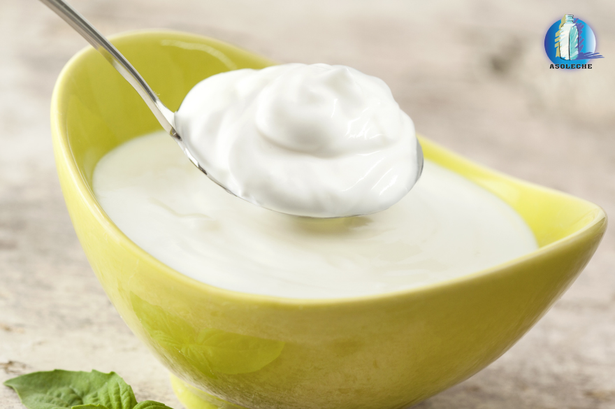
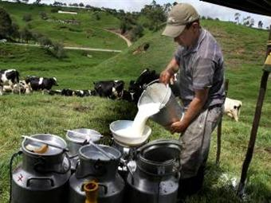
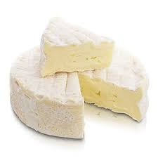

| Nombre | Descripcion | Imagen |
|---|---|---|
| Suero |
El suero es un alimento característico de la Costa Caribe colombiana. Su preparación original es a base de leche de vaca entera y cuajo, cuya propiedad es separar la caseína (proteínas sólidas lácteas) del suero (proteínas líquidas). Sin embargo, otra de las variaciones de preparación es reemplazar el cuajo con vinagre y limón, que también cumple la función de cortar la leche para conseguir las cantidades sólidas restantes y agregar sal, lo que da como resultado el delicioso suero costeño |
 |
| Leche |
Es una secreción nutritiva de color blanquecino opaco producida por las células secretoras de las glándulas mamarias o mamas de las hembras de los mamíferos, incluidos los monotremas. Su principal función es la de nutrir a las crías hasta que sean capaces de digerir otros alimentos, además de proteger su tracto gastrointestinal contra patógenos, toxinas e inflamación y contribuir a su salud metabólica regulando los procesos de obtención de energía, en especial el metabolismo de la glucosa y la insulina.5 Esta capacidad es una de las características que definen a los mamíferos. Es el único fluido que ingieren las crías de los mamíferos. |
 |
| Queso |
El queso es un alimento sólido elaborado a partir de la leche cuajada de vaca, cabra, oveja, búfalo, camella u otros mamíferos rumiantes. La leche es inducida a cuajarse usando una combinación de cuajo (o algún sustituto) y acidificación. Las bacterias beneficiosas se encargan de acidificar la leche, y tienen también un papel importante en la definición de la textura y el sabor de la mayoría de los quesos. Algunos también contienen mohos, tanto en la superficie exterior como en el interior. |
 |